One Engine,
Four Solutions.
하나의 엔진, 네 가지 솔루션.
DeepFusion AI의 단일 센서 퓨전 코어 엔진은 해양, 지상, 방산, 차량 도메인 전체를 아우르며 한계 없는 인지 능력을 발휘합니다.
네 가지 도메인 맞춤 솔루션
USV 무인수상정 인지 솔루션
360도 해상 감시
소형 어선, 양식장 부표, 부유 장애물을 1km 반경 내에서 악천후 속에서도 추적합니다.
해무/파랑 보정
해상 안개와 너울성 파도로 인한 해면 반사 잡음(Sea Clutter)을 AI 딥러닝으로 완전 정화합니다.
방산 규격 만족
충격, 진동, 해수 염무에 강인한 밀리터리 스펙 하드웨어 패키지를 공급합니다.
적용 분야 및 실증 갤러리
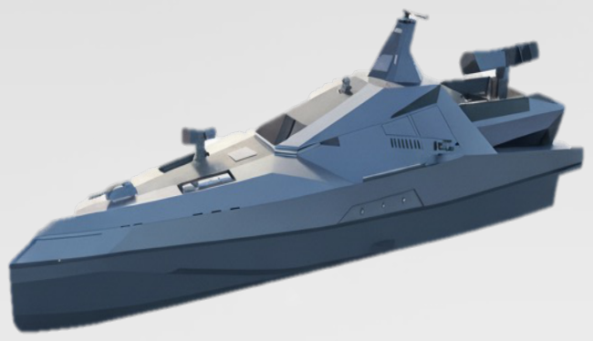
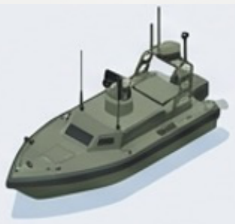
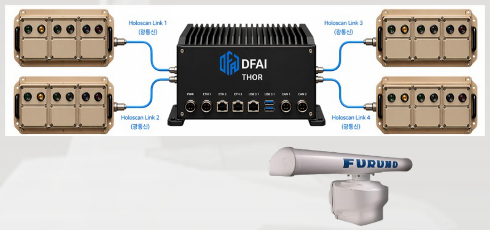
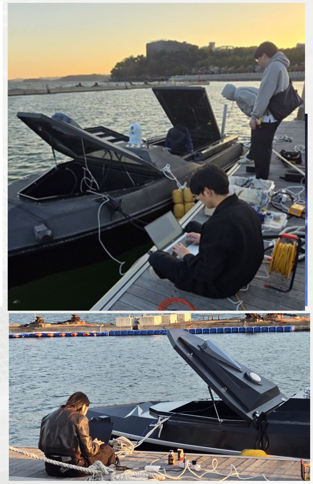
UGV 무인지상차량 인지 솔루션
야지/험지 비정형 인지
도로 선이 없는 야지, 수풀, 진흙 등 험난한 오프로드 환경에서도 가속 구동 및 장애물 유형을 검출합니다.
은폐 타겟 식별
수풀 뒤에 은폐된 철제 장비나 인원을 4D 레이다 전파 투과 특성으로 관측합니다.
실시간 3D 험지도 맵핑
차량 전방의 험지 굴곡과 단차를 3D 그리드로 복원하여 자율 경로 계획 장치에 전송합니다.
험지 자율 기동 실증 갤러리
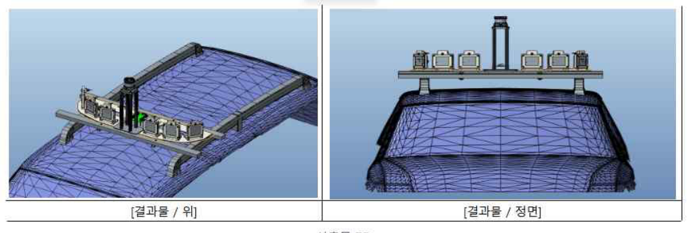
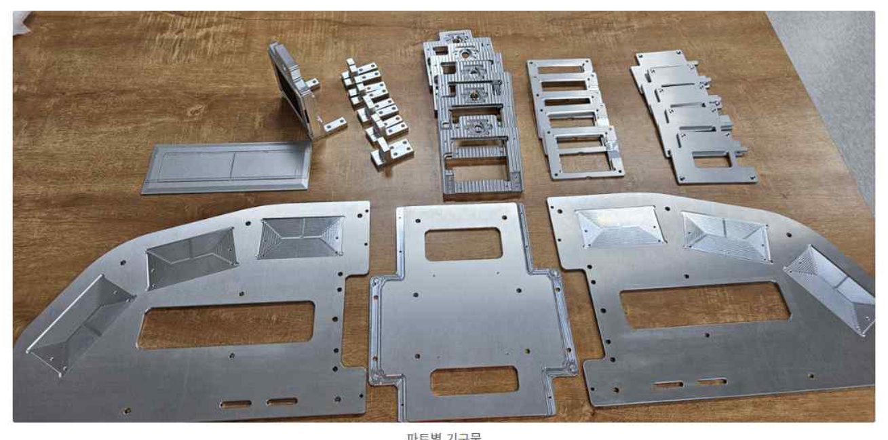
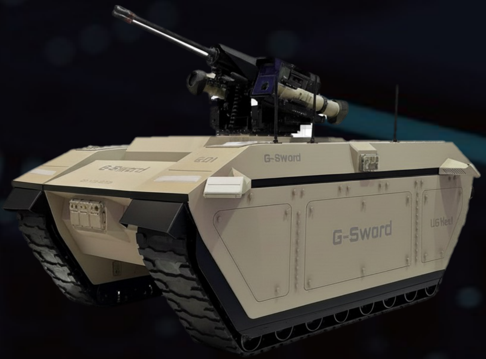
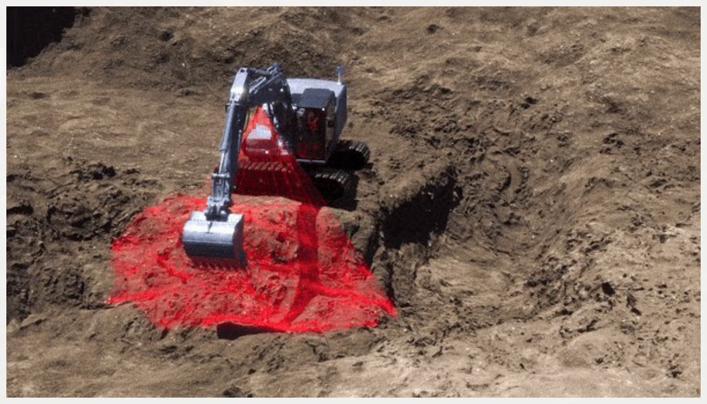
Wave Detection 실시간 파고 탐지 솔루션
실시간 파고/파주기 계측
선박 전방 100m 이내의 개별 파도 높이(파고)와 다가오는 속도를 초당 10회 이상 계측합니다.
최적 자율 운항 연동
파도 계측 정보를 기반으로 감속, 회피 조타 명령을 자율 운항 컴퓨터에 즉시 연동합니다.
전천후 안정성
폭풍우, 야간 해 fog 조건에서도 물리 센서 한계를 극복하고 계측 정밀도 90% 이상을 유지합니다.
파고 실증 계측 데이터 갤러리
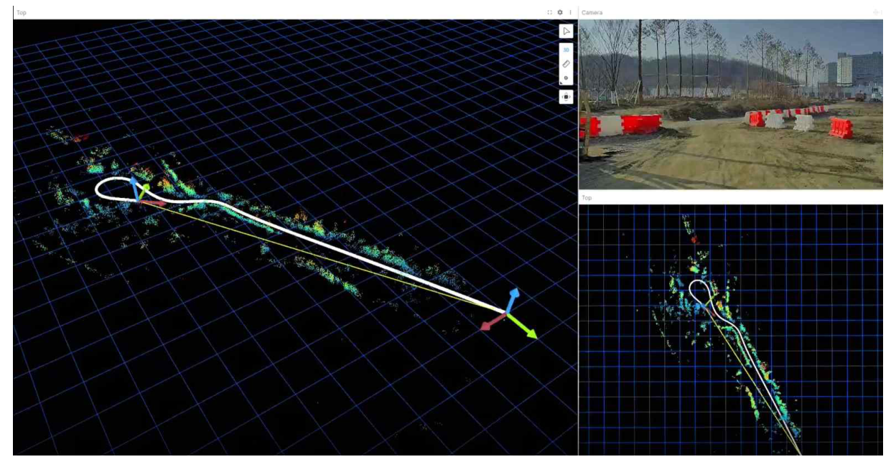
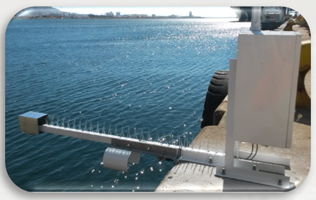
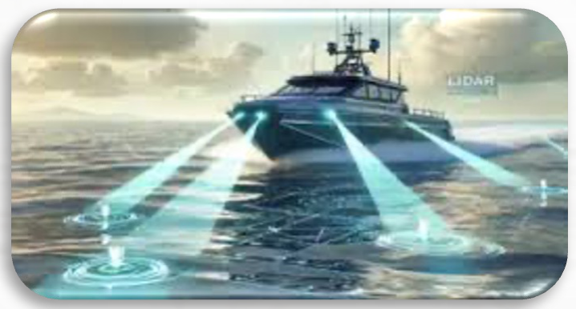
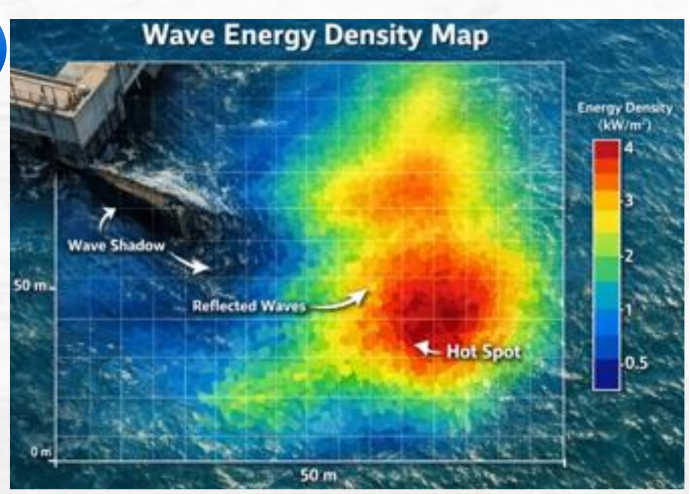
Autonomous Driving 양산 ADAS 솔루션
임베디드 ECU 포팅
차량용 차량 안전 규격(ISO 26262 ASIL-D) 및 실시간 임베디드 보드에 모델을 경량화 최적화하여 포팅합니다.
악천후 차선/차량 유지
폭설로 차선이 보이지 않는 경우에도 4D 레이다 랜드마크 맵핑을 통해 고정 차선 위치를 추적하여 주행을 유지합니다.
양산성 극대화
범퍼 내부에 매립 장착 가능한 소형 안테나 레이아웃 기술을 보유하여 자동차 OEM 양산 기준을 충족합니다.
공공 도로 주행 실증 갤러리
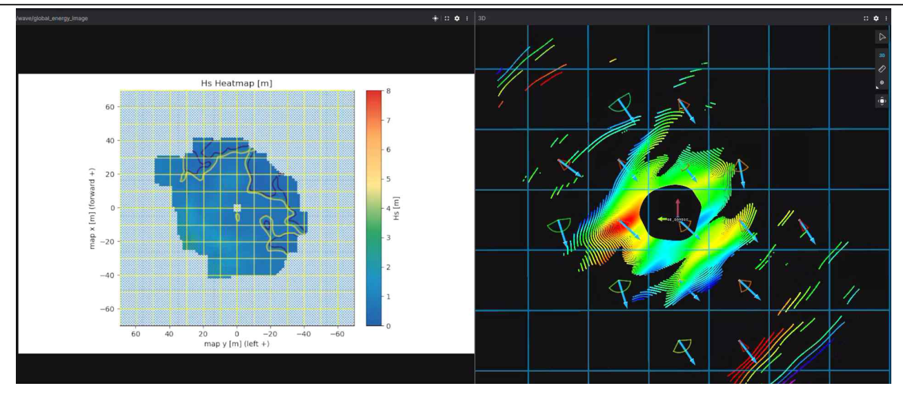
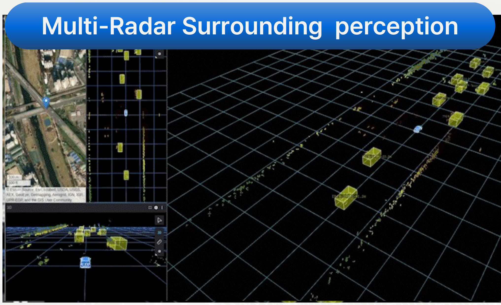
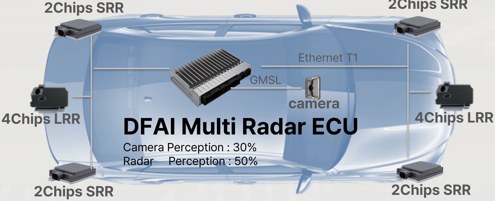
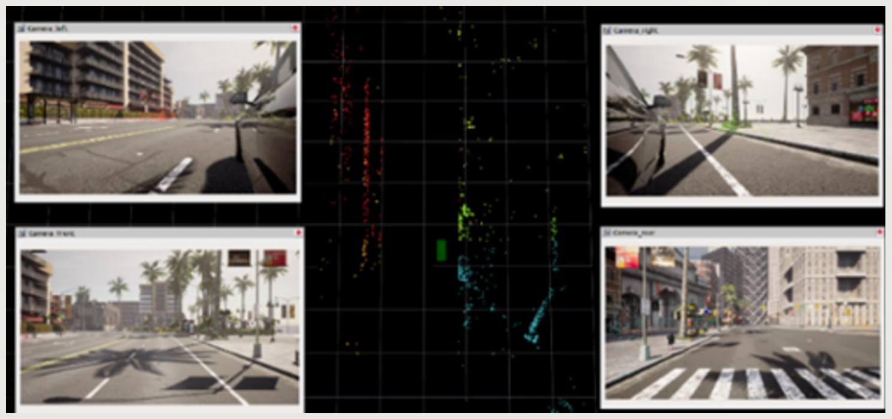
산업 전반의 실증 성과
해양수산부 혁신 제품
파고 계측 성능 공식 인증 획득
방산 실전 배치 실증
지상 무인 정찰 장비 탑재 및 작전 검증 수행
글로벌 OEM 협업
해외 자율주행 플랫폼 제조사 ADAS 퓨전 ECU 납품 테스트 진행
미래의 인지 기술,
함께 만들어가시겠습니까?
DFAI는 방산·해양·자동차 분야의 파트너와 새로운 자율 시스템을 만들어가고 있습니다.